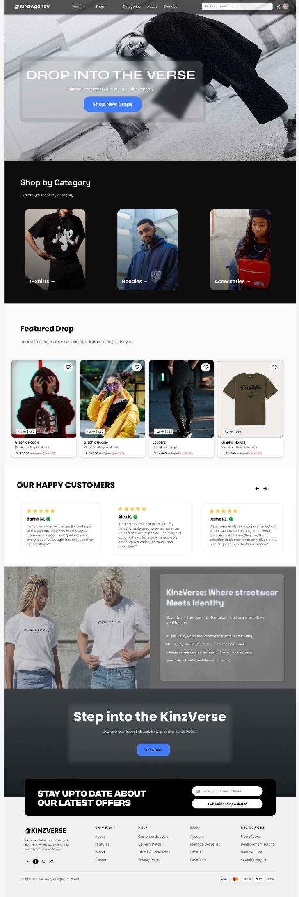
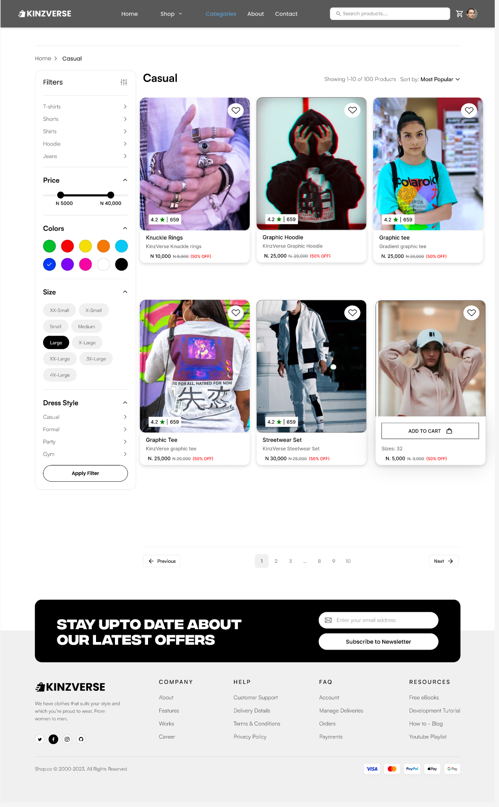

KinzVerse E-commerce Website
Modern, clean fashion e-commerce platform with intuitive navigation and seamless shopping experience

Overview
The brand needed an e-commerce platform that could showcase its fashion products effectively, improve user navigation, and provide a seamless shopping experience. Existing platforms felt cluttered and lacked personality, which made browsing and purchasing less intuitive for users.
The Problem
Cluttered interface, poor navigation, and lack of brand personality made shopping difficult and unintuitive.
The Goal
Create a modern, clean e-commerce platform with easy navigation, responsive layouts, and enhanced product discoverability.
My Role
As the UI/UX Designer (End-to-End), I was responsible for:
- Wireframing and information architecture
- Visual design and UI components
- Interactive prototyping
- Design system creation
Timeline: 3 weeks from concept to final prototype
Design Process
Wireframing & Information Architecture
I started with low-fidelity wireframes to establish clear navigation and product discovery flows. The focus was on creating an intuitive hierarchy that guides users from landing to checkout with minimal friction.

Visual Design
I designed a clean, modern aesthetic with a playful yet professional feel that reflects the KinzVerse brand. Key elements include:
- Clear product presentation with ample white space
- Consistent typography and color system
- Interactive elements for engagement
- Responsive layouts for all devices


Design System
I established a reusable design system that ensures consistency across the platform and can be easily extended for future product launches.
Color Palette
Typography
Headings: Inter Bold
Body: Inter Regular
Results & Impact
- Streamlined user journey from landing to checkout, reducing friction points
- Fully responsive design optimized for desktop and mobile users
- Enhanced product discoverability through intuitive navigation and clear calls-to-action
- Established design system ready for future product launches and features
"The clean, modern interface makes browsing products enjoyable and effortless."
View Prototype
Explore the interactive Figma prototype:
Open in Figma